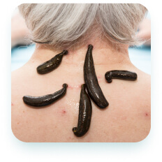

Tabiiy davolash usullari yordamida
kasalliklardan xalos bo’ling.
Hijoma, manual terapiya, zuluk va turli tabiiy
giyohlar eng ko’p uchraydigan kasalliklarni
yengishda yordam beradi. Sog’ligingizni o’z ishining
professionallariga ishonib topshiring.

Xizmatlar

Hijoma
Imom Termiziy Abdulloh ibn Abbos raziyallohu anhumodan rivoyat qilgan hadisda rasululloh sallallohu alayhi va sallam dedilar: «Sizlar hijoma qiladigan kunlaringizning eng yaxshisi 17, 19 va 21-kunlardir» (bu kunlar hijrij-kamariy hisobdagi oylar kunlaridir).

Manual terapiya
Imom Termiziy Abdulloh ibn Abbos raziyallohu anhumodan rivoyat qilgan hadisda rasululloh sallallohu alayhi va sallam dedilar: «Sizlar hijoma qiladigan kunlaringizning eng yaxshisi 17, 19 va 21-kunlardir» (bu kunlar hijrij-kamariy hisobdagi oylar kunlaridir).
- 
Zuluk bilan davolash
Imom Termiziy Abdulloh ibn Abbos raziyallohu anhumodan rivoyat qilgan hadisda rasululloh sallallohu alayhi va sallam dedilar: «Sizlar hijoma qiladigan kunlaringizning eng yaxshisi 17, 19 va 21-kunlardir» (bu kunlar hijrij-kamariy hisobdagi oylar kunlaridir).

Tabiiy dori vositalari
Imom Termiziy Abdulloh ibn Abbos raziyallohu anhumodan rivoyat qilgan hadisda rasululloh sallallohu alayhi va sallam dedilar: «Sizlar hijoma qiladigan kunlaringizning eng yaxshisi 17, 19 va 21-kunlardir» (bu kunlar hijrij-kamariy hisobdagi oylar kunlaridir).?